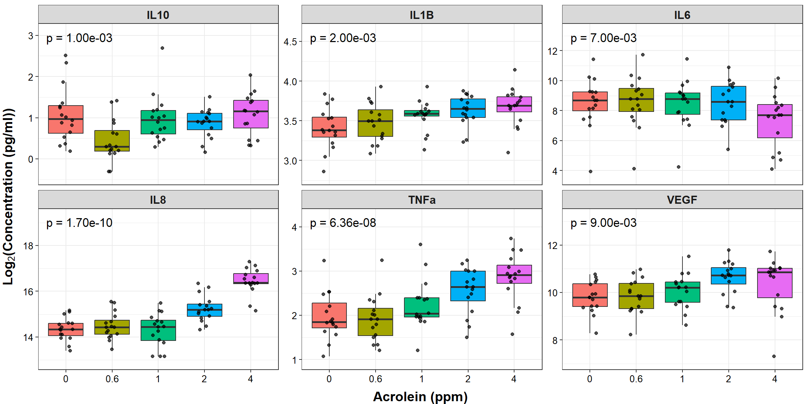
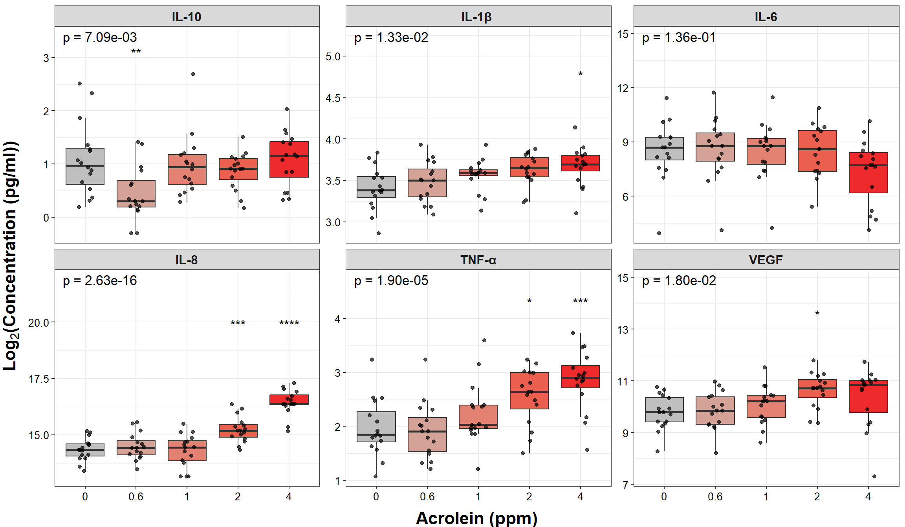

4.6 Advanced Multi-Group Comparisons
This training module was developed by Elise Hickman, Alexis Payton, and Julia E. Rager.
All input files (script, data, and figures) can be downloaded from the UNC-SRP TAME2 GitHub website.
Introduction to Training Module
In the previous module, we covered how to apply multi-group statistical testing, in which we tested for significant differences in endpoints across different values for one independent variable. In this module, we will build on the concepts introduced previously to test for significant differences in endpoints while considering two or more independent variables. We will review relevant statistical approaches and demonstrate how to apply these tests using the same example dataset as in previous modules in this chapter. As a reminder, this dataset includes concentrations of inflammatory biomarkers secreted by airway epithelial cells after exposure to different concentrations of acrolein.
Training Module’s Environmental Health Questions
This training module was specifically developed to answer the following environmental health questions:
Are there significant differences in inflammatory biomarker concentrations between sex and different doses of acrolein?
Are there significant differences in inflammatory biomarker concentrations across different doses of acrolein after controlling for sex and age?
Workspace Preparation and Data Import
Here, we will import the processed data that we generated at the end of TAME 2.0 Module 4.2, introduced in TAME 2.0 Module 4.1 Overview of Experimental Design and Example Data and associated demographic data. These data represent log2 concentrations of inflammatory biomarkers secreted by airway epithelial cells after exposure to four different concentrations of acrolein (plus filtered air as a control). We will also load packages that will be needed for the analysis, including previously introduced packages such as openxlsx, tidyverse, DT, ggpubr, and rstatix.
Advanced Multi-Group Comparisons
Two-way ANOVA
The first test that we’ll introduce is a two-way ANOVA. This test involves testing for mean differences in a continuous dependent variable across two categorical independent variables. (As a refresher, a one-way ANOVA uses a single independent variable to compare mean differences between groups.) Subjects or samples can be matched based upon their between-group factors (i.e., exposure duration) and/or their within-group factors (i.e., batch effects). Models that include both between-group and within-group factors are known as mixed two-way ANOVAs.
Like other parametric tests, two-way ANOVAs assume:
- Homogeneity of variance
- Independent observations
- Normal distribution
ANCOVA
An Analysis of Covariances (ANCOVA) tests for mean differences in a continuous dependent variable and at least one categorical independent variable. It also includes another variable, known as a covariate, that needs to be controlled or adjusted for to more accurately capture the relationship between the independent and dependent variables. Potential covariates can include either between-group factors like exposure duration and/or within-group factors like batch effects or sex. Note that if the dataset has a smaller sample size, stratification of the dataset based on that covariate is another option to determine its effects rather than adjusting for it using an ANCOVA.
ANCOVAs have the same assumptions listed above.
Note: It is possible to run two-way ANCOVA models, where the model contains two independent variables and at least one covariate to be adjusted for.
Two-way ANOVA Example
Our first environmental health question can be answered using a two-way ANOVA. We can test three different null hypotheses using this test:
- There is no difference in average biomarker concentrations based on sex.
- There is no difference in average biomarker concentrations based on dose.
- The effect of sex on average biomarker concentration does not depend on the effect of dose and vice versa.
The first step would be to check that the assumptions (independence, homogeneity of variance, and normal distribution) have been met, but this was done previously in TAME 2.0 Module 4.4 Two Group Comparisions and Visualizations.
To run our two-way ANOVA, we will use the anova_test() function from the rstatix package. This function allows us to define subject identifiers for matching between-subject factor variables (such as sex - factors that differ between subjects) and within-subject factors (such as dose - factors that are measured within each subject). Since we have both between- and within- subject factors, we will specifically be running a two-way mixed ANOVA.
First, we need to add our demographic data to our biomarker data so that these variables can be incorporated into the analysis. Also, we need to convert Dose into a factor to specify the levels.
biomarker_data <- biomarker_data %>%
left_join(demographic_data, by = "Donor") %>%
mutate(Dose = factor(Dose, levels = c("0", "0.6", "1", "2", "4")))
# viewing data
datatable(biomarker_data)Then, we can demonstrate how to run the two-way ANOVA and what the results look like by running the test on just one of our variables (IL-1\(\beta\)).
get_anova_table(anova_test(data = biomarker_data,
dv = IL1B,
wid = Donor,
between = Sex,
within = Dose))## ANOVA Table (type III tests)
##
## Effect DFn DFd F p p<.05 ges
## 1 Sex 1.00 14.0 0.014 0.909 0.000488
## 2 Dose 2.42 33.9 6.632 0.002 * 0.192000
## 3 Sex:Dose 2.42 33.9 2.799 0.065 0.091000The column names are described below:
Effect: the name of the variable testedDFn: degrees of freedom in the numeratorDfd: degrees of freedom in the denominatorF: F distribution testp: p-valuep<.05: denotes whether the p-value is significantges: generalized effect size
Based on the table above, there are significant differences in IL-1\(\beta\) concentrations based on dose (p-value = 0.02). There are no significant differences in IL-1\(\beta\) between the sexes nor are there significant differences in IL-1\(\beta\) with an interaction between sex and dose.
Similar to previous modules, we now want to apply our two-way ANOVA to each of our variables of interest. To do this, we can use a for loop that will:
- Loop through each column in the data and apply the test to each column.
- Pull out statistics we are interested in (for example, p-value) and bind the results from each column together into a results dataframe.
# Create a vector with the names of the variables you want to run the test on
endpoints <- colnames(biomarker_data %>% dplyr::select(IL1B:VEGF))
# Create data frame to store results
twoway_aov_res <- data.frame(Factor = c("Dose", "Sex", "Sex:Dose"))
# Run for loop
for (i in 1:length(endpoints)) {
# Assign a name to the endpoint variable
endpoint <- endpoints[i]
# Run two-way mixed ANOVA and store results in res_aov
res_aov <- anova_test(data = biomarker_data,
dv = paste0(endpoint),
wid = Donor,
between = Sex,
within = Dose)
# Extract the results we are interested in (from the ANOVA table)
res_df <- data.frame(get_anova_table(res_aov)) %>%
dplyr::select(c(Effect, p)) %>%
rename("Factor" = "Effect")
# Rename columns in the results dataframe so that the output is more nicely formatted
names(res_df)[names(res_df) == 'p'] <- noquote(paste0(endpoint))
# Bind the results to the results dataframe
twoway_aov_res <- merge(twoway_aov_res, res_df, by = "Factor", all.y = TRUE)
}
# View results
datatable(twoway_aov_res)An appropriate title for this table could be:
“Figure X. Statistical test results for differences in cytokine concentrations. A two-way ANOVA was performed using sex and dose as independent variables to test for statistical differences in concentration across 6 cytokines.”
From this table, dose is the only variable with significant differences in concentrations in all 6 biomarkers (p-value < 0.05).
Although we know that dose has significant differences overall, an ANOVA test doesn’t tell us which doses of acrolein differ from each other or the directionality of each biomarker’s change in concentration after exposure to each dose. Therefore, we need to use a post-hoc test. One common post-hoc test following a one-way or two-way ANOVA is a Tukey’s HSD. However, there is no way to pass the output of the anova_test() function to the TukeyHSD() function. A good alternative is a pairwise t-test with a Bonferroni correction. Our data are paired in that there are repeated measures (doses) on each subject.
# Create data frame to store results
twoway_aov_pairedt <- data.frame(Comparison = c("0_0.6", "0_1", "0_2", "0_4", "0.6_1", "0.6_2", "0.6_4", "1_2", "1_4", "2_4"))
# Run for loop
for (i in 1:length(endpoints)) {
# Assign a name to the endpoint variable.
endpoint <- endpoints[i]
# Run pairwise t-tests
res_df <- biomarker_data %>%
pairwise_t_test(as.formula(paste0(paste0(endpoint), "~", "Dose", sep = "")),
paired = TRUE,
p.adjust.method = "bonferroni") %>%
unite(Comparison, group1, group2, sep = "_", remove = FALSE) %>%
dplyr::select(Comparison, p.adj)
# Rename columns in the results data frame so that the output is more nicely formatted.
names(res_df)[names(res_df) == 'p.adj'] <- noquote(paste0(endpoint))
# Bind the results to the results data frame.
twoway_aov_pairedt <- merge(twoway_aov_pairedt, res_df, by = "Comparison", all.y = TRUE)
}
# View results
datatable(twoway_aov_pairedt)An appropriate title for this table could be:
“Figure X. Post hoc testing for differences in cytokine concentrations. Paired t-tests were run as a post hoc test using dose as an independent variable to test for statistical differences in concentration across 6 cytokines.”
Note that this table and the two-way ANOVA table would likely be put into supplemental material for a publication. Before including this table in supplemental material, it would be best to clean it up (make the two comparison groups more clear, round all results to the same number of decimals) as demonstrated in TAME 2.0 Module 4.5 Multi-Group Comparisons and Visualizations.
Answer to Environmental Health Question 1
With this, we can answer Environmental Health Question #1: Are there significant differences in inflammatory biomarker concentrations between sex and different doses of acrolein?
Answer: Based on the two-way ANOVA and post-hoc t-tests, there are only significant differences in cytokine concentrations based on dose (p adj < 0.05). All biomarkers, with the exception of IL-6, had at least 1 significantly different concentration when comparing doses.
Visualizing Two-Way ANOVA Results
Since our overall p-values associated with dose were significant for a number of mediators, we will proceed with creating our final figures with our endpoints by dose, showing the overall two-way ANOVA p-value and the pairwise comparisons from our post hoc paired pairwise t-tests.
To facilitate plotting in a faceted panel, we’ll first pivot our biomarker_data dataframe longer.
biomarker_data_long <- biomarker_data %>%
dplyr::select(-c(Age_yr, Sex)) %>%
pivot_longer(-c(Donor, Dose), names_to = "Variable", values_to = "Value")
datatable(biomarker_data_long)Then, we will create an annotation dataframe for adding our overall two-way ANOVA p-values. This dataframe needs to contain a column for our variables (to match with our variable column in our biomarker_data_long dataframe) and the p-value for annotation. We can extract these from our two_way_aov_res dataframe generated above.
overall_dose_pvals <- twoway_aov_res %>%
# Transpose dataframe
column_to_rownames("Factor") %>%
t() %>% data.frame() %>%
rownames_to_column("Variable") %>%
# Keep only the dose results and rename them to p-value
dplyr::select(c(Variable, Dose)) %>%
rename(`P Value` = Dose)
datatable(overall_dose_pvals)We now have our p-values for each biomarker. Next, we’ll make a column where our p-values are formatted with “p =” for annotation on the graph.
overall_dose_pvals <- overall_dose_pvals %>%
mutate(`P Value` = formatC(`P Value`, format = "e", digits = 2),
label = paste("p = ", `P Value`, sep = ""))
datatable(overall_dose_pvals)Finally, we’ll add a column indicating where to add the labels on the y-axis. This will be different for each variable because each variable is on a different scale. We can approach this by computing the maximum value of each variable, then increasing that by 10% to add some space on top of the points.
sig_labs_y <- biomarker_data %>%
summarise(across(IL1B:VEGF, \(x) max(x))) %>%
t() %>% as.data.frame() %>%
rownames_to_column("Variable") %>%
rename("y_pos" = "V1") %>%
# moving the significance asterisks higher on the y axis
mutate(y_pos = y_pos * 1.1)
sig_labs_y## Variable y_pos
## 1 IL1B 4.553957
## 2 IL6 12.901770
## 3 IL8 19.022763
## 4 IL10 2.955767
## 5 TNFa 4.105496
## 6 VEGF 12.969025overall_dose_pvals <- overall_dose_pvals %>%
left_join(sig_labs_y, by = "Variable")
datatable(overall_dose_pvals)Now, we’ll use the biomarker_data dataframe to plot our individual points and boxplots (similar to the plotting demonstrated in previous TAME Chapter 4 modules) and our overall_dose_pvals dataframe to add our p value annotation.
# Create clean labels for the graph titles
new_labels <- c("IL10" = "IL-10", "IL1B" = "IL-1\u03B2 ", "IL6" = "IL-6", "IL8" = "IL-8",
"TNFa" = "TNF-\u03b1", "VEGF" = "VEGF")
# Make graph
ggplot(biomarker_data_long, aes(x = Dose, y = Value)) +
# outlier.shape = NA removes outliers
geom_boxplot(aes(fill = Dose), outlier.shape = NA) +
geom_jitter(size = 1.5, position = position_jitter(0.15), alpha = 0.7) +
# Add label
geom_text(data = overall_dose_pvals, aes(x = 1.3, y = y_pos, label = label,
size = 5)) +
# Adding padding y axis
scale_y_continuous(expand = expansion(mult = c(0.1, 0.1))) +
# Faceting by each biomarker
facet_wrap(~ Variable, nrow = 2, scales = "free_y", labeller = labeller(variable = new_labels)) +
theme(legend.position = "none", # Removing legend
axis.title = element_text(face = "bold", size = rel(1.3)),
axis.title.x = element_text(vjust = -0.75),
axis.title.y = element_text(vjust = 2),
axis.text = element_text(color = "black", size = 10),
strip.text = element_text(size = 12, face = "bold")) +
# Changing axes labels
labs(x = "Acrolein (ppm)", y = expression(bold(Log[2]*"(Concentration (pg/ml))")))
It’s a bit more difficult to add the pairwise t test results to the boxplots comparing each treatment group to each other as was done similarly in TAME 2.0 Module 4.5 Multi-Group Comparisons and Visualizations, so that addition to the figure was omitted here.
ANCOVA Example
In the following ANCOVA example, we’ll still investigate potential differences in cytokine concentrations as result of varying doses of acrolein. However, this time we’ll adjust for sex and age to answer our second environmental health question: Are there significant differences in inflammatory biomarker concentrations across different doses of acrolein after controlling for sex and age?.
Let’s first demonstrate how to run an ANCOVA and what the results look like by running the test on just one of our variables (IL-1\(\beta\)). The Anova() function was specifically designed to run type II or III ANOVA tests, which have different approaches to dealing with interactions terms and unbalanced datasets. For more information on Type I, II, III ANOVA tests, check out Anova – Type I/II/III SS explained. For the purposes of this example just know that isn’t much of a difference between the type I, II, or III results.
anova_test = aov(IL1B ~ Dose + Sex + Age_yr, data = biomarker_data)
type3_anova = Anova(anova_test, type = 'III')
type3_anova## Anova Table (Type III tests)
##
## Response: IL1B
## Sum Sq Df F value Pr(>F)
## (Intercept) 56.720 1 1092.9386 < 2.2e-16 ***
## Dose 0.762 4 3.6697 0.008862 **
## Sex 0.002 1 0.0318 0.858954
## Age_yr 0.000 1 0.0000 0.994833
## Residuals 3.788 73
## ---
## Signif. codes: 0 '***' 0.001 '**' 0.01 '*' 0.05 '.' 0.1 ' ' 1Based on the table above, there are significant differences in IL-1\(\beta\) concentrations in dose after adjusting for sex and age (p-value = 0.009).
Now we’ll run ANCOVA tests across all of our biomarkers.
# Create data frame to store results
ancova_res = data.frame()
# Add row names to data frame so that it will be able to add ANCOVA results
rownames <- c("(Intercept)", "Dose", "Sex", "Age_yr")
ancova_res <- data.frame(cbind(rownames))
# Assign row names
ancova_res <- data.frame(ancova_res[, -1], row.names = ancova_res$rownames)
# Perform ANCOVA over all columns
for (i in 3:8) {
fit = aov(as.formula(paste0(names(biomarker_data)[i], "~ Dose + Sex + Age_yr", sep = "")),
biomarker_data)
res <- data.frame(car::Anova(fit, type = "III"))
res <- subset(res, select = Pr..F.)
names(res)[names(res) == 'Pr..F.'] <- noquote(paste0(names(biomarker_data[i])))
ancova_res <- transform(merge(ancova_res, res, by = 0), row.names = Row.names, Row.names = NULL)
}
# Transpose for easy viewing, keep columns of interest, and apply BH adjustment
ancova_res <- data.frame(t(ancova_res)) %>%
dplyr::select(Dose) %>%
mutate(across(everything(), \(x) format(p.adjust(x, "BH"), scientific = TRUE)))
# View results
datatable(ancova_res)Looking at the table above, there are statistically differences in all cytokine concentrations with the exception of IL-6 based on dose (p adj < 0.05). To determine what doses were significantly different from one another we’ll need to run Tukey’s post hoc tests.
# Create results data frame with a column showing the comparisons (extracted from single run vs for loop)
tukey_res <- data.frame(Comparison = c("0.6 - 0", "1 - 0", "2 - 0", "4 - 0", "1 - 0.6", "2 - 0.6",
"4 - 0.6", "2 - 1", "4 - 1", "4 - 2"))
# Perform Tukey's test
for (i in 3:8) {
# need to run ANCOVA first
fit = aov(as.formula(paste0(names(biomarker_data)[i], "~ Dose + Sex + Age_yr", sep = "")),
biomarker_data)
# Tukey's
posthoc <- summary(glht(fit, linfct = mcp(Dose = "Tukey")), test = adjusted("BH"))
res <- summary(posthoc)$test
# Formatting the df with the Tukey's values
res_df <- data.frame(cbind (res$coefficients, res$sigma, res$tstat, res$pvalues))
colnames(res_df) <- c("Estimate", "Std.Error", "t.value", "Pr(>|t|)")
res_df <- round(res_df[4],4)
names(res_df)[names(res_df) == 'Pr(>|t|)'] <- noquote(paste0(names(biomarker_data[i])))
res_df <- res_df %>% rownames_to_column("Comparison")
tukey_res <- left_join(tukey_res, res_df, by = "Comparison")
}
datatable(tukey_res)Answer to Environmental Health Question 2
With this, we can answer Environmental Health Question #2: Are there significant differences in inflammatory biomarker concentrations across different doses of acrolein after controlling for sex and age?
Answer: Based on the ANCOVA tests, there are significant differences resulting from various doses of acrolein (p adj < 0.05) across all cytokine concentrations with the exception of IL-6. All biomarkers, with the exception of IL-6, had at least 1 significantly different biomarker concentration when comparing doses.
Visualizing ANCOVA Results
Before graphing these results, we first need to think about which ones we want to display. For simplicity’s sake, we will demonstrate graphing only comparisons that are with the control(“0”) group and that are significant. To do this, we’ll:
- Separate our
Comparisoncolumn into agroup1andgroup2column. - Filter to comparisons including only the 0 group.
- Pivot the dataframe longer, to match the format of our data used as input for facet plotting.
- Filter to only p-values that are less that 0.05.
tukey_res_forgraph <- tukey_res %>%
separate(Comparison, into = c("group1", "group2"), sep = " - ") %>%
filter(group2 == "0") %>%
dplyr::select(-group2) %>%
pivot_longer(!group1, names_to = "Variable", values_to = "P Value") %>%
filter(`P Value` < 0.05) %>%
# rounding the p values to 4 digits for readability
mutate(`P Value` = round(`P Value`, 4))
datatable(tukey_res_forgraph)Next, we can take a few steps to add columns to the dataframe that will aid in graphing:
- Add a column for significance stars.
- Add a column to indicate the y position for the significance annotation (similar to the above example with the two-way ANOVA).
# Add column for significance stars
tukey_res_forgraph <- tukey_res_forgraph %>%
mutate(p.signif = ifelse(`P Value` < 0.0001, "****",
ifelse(`P Value` < 0.001, "***",
ifelse(`P Value` < 0.01, "**",
ifelse(`P Value` < 0.05, "*", NA)))))
# Calculate y positions to plot significance stars
sig_labs_y_tukey <- biomarker_data %>%
summarise(across(IL1B:VEGF, \(x) max(x))) %>%
t() %>% as.data.frame() %>%
rownames_to_column("Variable") %>%
rename("y_pos" = "V1") %>%
mutate(y_pos = y_pos * 1.15)
sig_labs_y_tukey## Variable y_pos
## 1 IL1B 4.760955
## 2 IL6 13.488214
## 3 IL8 19.887434
## 4 IL10 3.090120
## 5 TNFa 4.292110
## 6 VEGF 13.558526# Join y positions to tukey_res
tukey_res_forgraph <- tukey_res_forgraph %>%
left_join(sig_labs_y_tukey, by = "Variable") %>%
rename("Dose" = "group1")
datatable(tukey_res_forgraph)We also need to prepare our overall p-values from our ANCOVA for display:
ancova_res_forgraphing <- ancova_res %>%
rename(`P Value` = Dose) %>%
rownames_to_column("Variable") %>%
left_join(sig_labs_y, by = "Variable") %>%
mutate(`P Value` = formatC(as.numeric(`P Value`), format = "e", digits = 2),
label = paste("p = ", `P Value`, sep = ""))Now, we are ready to make our graph! We will use similar code to the above, this time adding in our significance stars over specific columns.
# Make graph
ggplot(biomarker_data_long, aes(x = Dose, y = Value)) +
# outlier.shape = NA removes outliers
geom_boxplot(aes(fill = Dose), outlier.shape = NA) +
# Changing box plot colors
scale_fill_manual(values = c("#BFBFBF", "#D5A298", "#E38273", "#EB5F4E", "#EE2B2B")) +
geom_jitter(size = 1.5, position = position_jitter(0.15), alpha = 0.7) +
# Add overall ANCOVA label
geom_text(data = ancova_res_forgraphing, aes(x = 1.3, y = y_pos * 1.15, label = label, size = 10)) +
# Add tukey annotation
geom_text(data = tukey_res_forgraph, aes(x = Dose, y = y_pos, label = p.signif, size = 10, hjust = 0.5)) +
# Faceting by each biomarker
facet_wrap(~ Variable, nrow = 2, scales = "free_y", labeller = labeller(Variable = new_labels)) +
# Removing legend
theme(legend.position = "none",
axis.title = element_text(face = "bold", size = rel(1.5)),
axis.title.x = element_text(vjust = -0.75),
axis.title.y = element_text(vjust = 2),
axis.text = element_text(color = "black", size = 10),
strip.text = element_text(size = 12, face = "bold")) +
# Changing axes labels
labs(x = "Acrolein (ppm)", y = expression(bold(Log[2]*"(Concentration (pg/ml))"))) An appropriate title for this figure could be:
“Figure X. Acrolein exposure increases inflammatory cytokine secretion in most primary human bronchial epithelial cells. Overall p-values from ANCOVA tests adjusting for age and sex are in the left-hand corner. Tukey’s post hoc tests were subsequently run and significant Benjamini-Hochberg adjusted p-values are denoted with asterisks compared to the control (0ppm) dose only. p < 0.05, ** p < 0.01, *** p < 0.001, **** p < 0.0001, n = 16 per group.”
Concluding Remarks
In this module, we introduced advanced multi-group comparisons using two-way ANOVA and ANCOVA tests. These overall effect tests along with post-hoc testing were used on an example dataset to provide a basis for publication-ready tables and figures to present these results. This training module provides code and text for advanced multi-group comparisons necessary to answer more complex research questions.
Additional Resources
- Two-Way ANOVA
- Repeated Measure ANOVA in R
- ANCOVA Example
- Nonparametric ANOVA RDocumentation
- Nonparametric ANCOVA RDocumentation
Functional endpoints from these cultures were also measured. These endpoints were: 1) Membrane Permeability (MemPerm), 2) Trans-Epithelial Electrical Resistance (TEER), 3) Ciliary Beat Frequency (CBF), and 4) Expression of Mucin (MUC5AC). These data were already processed and tested for normality (see Test Your Knowledge for TAME 2.0 Module 4.2 Data Import, Processing, and Summary Statistics), with results indicating that two of the endpoints are normally distributed and two non-normally distributed. Using the data found in “Module4_5_TYKInput.xlsx”, answer the following research question: Are there significant differences in functional endpoints based on doses of acrolein and sex after adjusting for age? To streamline the analysis, we’ll only include doses of acrolein at 0, 1, and 4ppm.
Hint: You’ll need to run a two-way ANCOVA. Given that some of the assumptions for parametric tests (i.e., normality and homogeneity of variance) and the size of the data is on the smaller side, we likely wouldn’t run a parametric test. However, we’ll do so here just to illustrate an example of how to run a two-way ANCOVA.